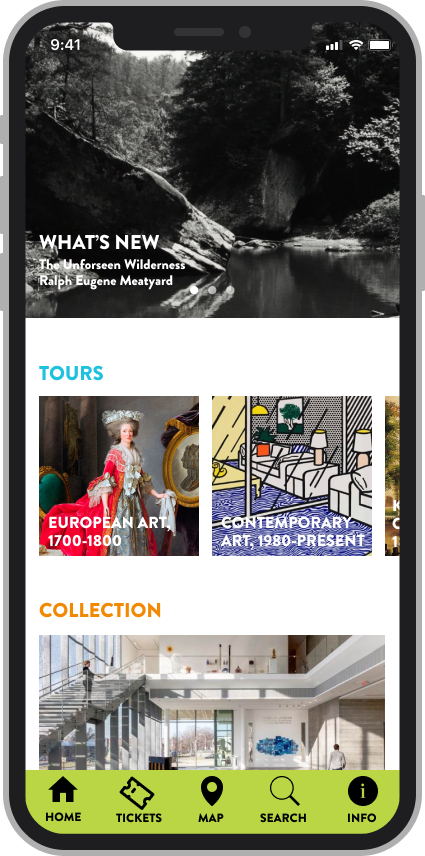

Museum Virtual Tour
Exploring a museum collection from the comfort of your couch.
How can we allow people to explore a museum's collection without visiting the museum in person?
Project Details
CONTRIBUTION
- UX Research
- UX Design
- UI Design
- Map Design
TOOLS USED
- FigJam
- Miro
- Figma
- Illustrator
Challenge
The pandemic forced people to change the way they did many things but it also showed the world we can adapt and experience so many new things virtually. I wanted to create an app that would allow users to explore an art museum virtually if they're not able to visit in-person. The app is also designed to be a companion for patrons who are able to visit so they can discover even more about the artworks housed in the collection.
This prototype is a project I completed for the Google UX Design Certificate program and instead of creating a prototype for a fictional museum I decided to create the prototype based off of the Speed Art Museum; this also gave me the opportunity of creating a product using existing brand guidelines. This project was completed on my own without any affiliation with the Speed Art Museum.
Solution
The two main use cases I devised for this prototype are for patrons who are physically in the museum and for users who are not visiting the museum in-person. Patrons who are in the museum can buy tickets and choose from several guided tours. All users, both in-person and virtual can view the museum map, view the collection, view detailed information about artworks and create a favorites list of preferred artworks.
Research
The research I completed for this prototype includes affinity mapping, creating a competitive audit analysis, user journeys, user personas, storyboarding, user flows and information architecture.
User Personas
Using data from my research I created two personas for the two main types of users of the app.
Storyboards
I created two storyboards, a big picture user journey and a close up user journey to determine how a museum patron might benefit from using this app.
User Flows
This is the main user flow for a user who is visiting the museum in-person. They are able to buy tickets, view the map, view and choose a route and complete the route.
Information Architecture Map
Low Fidelity Wireframes
I find I am able to be most creative when I am using a pen and paper to sketch out my ideas so I always like to start creating wireframes on paper. After I narrow down my designs I create digital wireframes.


Usability Testing and Affinity Mapping
I conducted a usability test with the low fidelity wireframes and created an affinity map based on the feedback I received. This data guided me in working on my next set of prototypes.
High Fidelity Prototype
Based on the user research I conducted I began creating a high fidelity prototype of the virtual tour app. I began by creating the Home screen and the Tours flow. After creating my first iteration of this flow I conducted another usability test. During this test I discovered that users may want to navigate to the Tours screen from other screens but in my first iteration the user had to return to the Home screen to click on Tours.


I simplified the navigation bar by moving the search feature to the Information screen, moved the Information screen to a hamburger menu on the Home screen and added an icon for Tours in the navigation bar.
Tours Flow
Takeaways
While creating this prototype I gained experience in:
Creating a competitive audit analysis. I found creating a competitive audit interesting and insightful because it helped me narrow down specific features that I thought would bring value to my prototype as well as gave me the opportunity to analyze what other apps were doing successfully.
Iterating on an idea based on user testing. Originally I designed a wireframe map with the tour routes on the map and planned on that being the way users would choose a route. However, testers were confused about how to choose a route so I adjusted my design and now the map is used for navigation only and users choose a route from a list.
Creating a storyboard. For this prototype I found that creating a storyboard was particularly valuable to understanding a user's needs because one of the main features of this app would be to use it in a specific location. Making a storyboard to walk through the user's experience helped me narrow down the features I wanted to include.
Animating the prototype in Figma. I had created mockups in Figma before but this was my first experience with creating animations in Figma. I found the Smart Animate feature very helpful and intuitive in creating my interactions.